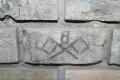
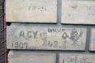
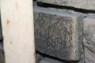
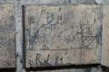
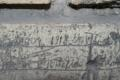
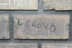
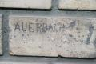

|
 | "Nemecsek didergett.
- Siessünk - mondta.
- Megállj - szólt
Boka -, te lóvonaton menj haza. Nesze, adok pénzt!
A zsebébe nyúlt, de bennakadt a keze.
Csak három krajcárja volt az elnöknek. Nem volt más a zsebében, mint három rézkrajcár meg
a finom tintatartó, melybõl vidáman folydogált a kék tinta. Elõhúzta a tintás három
krajcárt, és odaadta Nemecseknek.
- Csak ennyi van."
- Molnár Ferenc: A Pál utcai
fiúk
Nap mint nap a régi Budapest rég elporladt lakóinak üzenete mellett
mehet el az, aki az Astoria felé jár. Én sem vettem volna észre, ha Pál Marci meg nem
mutatja.
Az Astoriánál, az ELTE épületén keressük meg ezt a sarkot
Valaha, még a múlt század fordulóján itt volt a lóvasút végállomása.
Ebben a sarokban állt egy kis fabódé, a váltóõrök szolgálati helye.

S ahol a bódé takarta - mert a falra firkálni akkoriban még fõbenjáró
illetlenség volt - mindegyik belekarcolta a maga nevét, jelét a téglákba.
A fal telis-tele van százéves graffitikkel!
Itt dolgozott Adorján György, aki 1907 október 20-án volt
szolgálatban
"Münzl János váltóõr írta"

Adorjáni György le is rajzolta magát és a magyar címert mestersége
címerével, a zászlóval és a váltóállító rúddal. Mert egy magyar váltóõr legyen a szívében is
magyar!

Csonka Ernõ a 83. számú váltóõr volt, Gróf Ferencz pedig a 92-es. Ha jól
olvasom, Fiuméból származott.
Szûcs József egy kicsit hadilábon állt a betûvetés tudományával
1907-ben
Virág nevû kollégájának keresztnevét már elmosta a történelem, no meg az
erózió. Nyomta volna oda jobban azt a fránya szöget.
BA talán Blogadmin volt. Õ se ír szebben. Igaz, az m betûnek nem rajzol
négy szárat.

Sajnos nehéz kiolvasni, ki volt szolgálatban azon az 1899-es napon, mert
az utókor ráépített egy villámhárítót
Mergl J. v. õr. Csak tömören.

R. J. is lerajzolta magát 1901-ben, amint a lóvonatnak
integet

Mi történhetett itt 1918-ban?
Baranyai

L. S. volt a 60. sz. váltóõr

Auerbach sem maradhatott ki
A grafomán Adorján büszkén odarajzolt egy kardot, talán épp katonának készült?
Az utókor: Juli és Peti száz évvel késõbb. Kérjük, ha valaki olvassa a
Bombagyárat 2109 körül, nézze meg, megvan-e még ez a bevésés.
| | vissza a fõoldalra |  |
| 1 2 3 4 | |  | | | | | | | | | | | | | | | | | | | | 1 2 3 4 |  |
|


túraszervezõ
túra-rss
mi ez?

legjobbak
legolvasottabbak
tartalomjegyzék
rss feed

AboryM
Caesar
Count Grishnackh
cscsabi
eürdüngh
Feki
GyalogKakukk
Ishukone
Kadzseszka
LACI1993
Mini
Muska
Rommel
Segi
Takezó
tommylee
vikcee
|
BlogGép 1.1 (C) 2007-2009 tomcat
nem adom
hülye kérdések elott olvasd el a faq-t
minden, a bombagyar.hu-n és aloldalain közölt tartalom újraközléséhez
a szerkesztõk írásos beleegyezése szükséges
az olvasói kommentárok és levelek nem feltétlenül a szerkesztõk véleményét tükrözik
házirend elolvasása